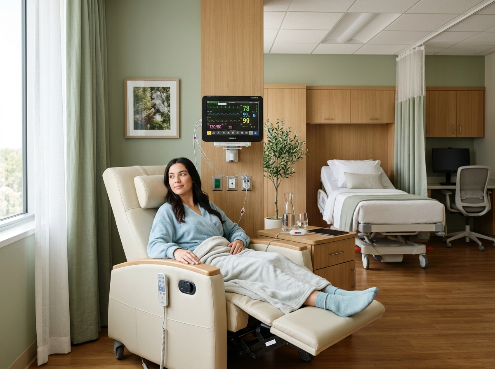

Featured ArticleUnderstanding Modern Minimally Invasive Daycare Surgery: Faster Healing with Zero Overnight Stays
Advances in high-precision laparoscopy and laser proctology have transformed patient recovery. Discover how day-care surgical interventions reduce infection risks, minimise physical trauma, and allow safe discharge to your home comforts within hours.